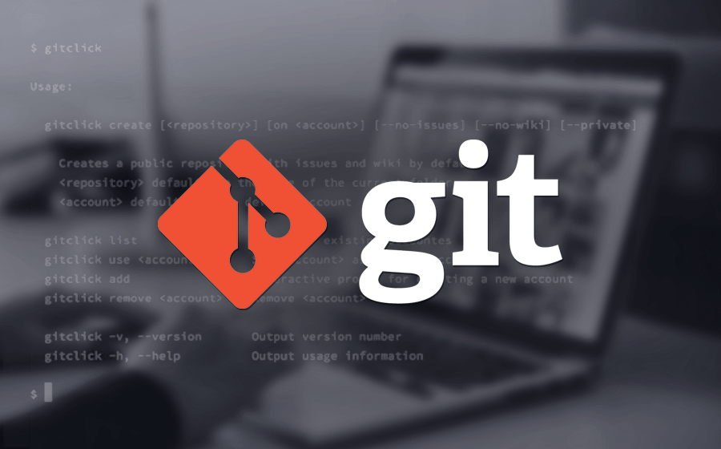

Qu'est ce que GIT ?
Git est de loin le système de contrôle de version le plus largement utilisé aujourd'hui. Git est un projet open source avancé, qui est activement maintenu. À l'origine, il a été développé en 2005 par Linus Torvalds, le créateur bien connu du noyau du système d'exploitation Linux
